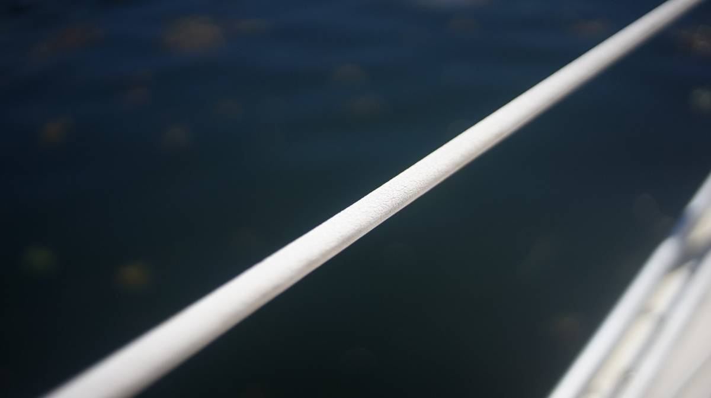
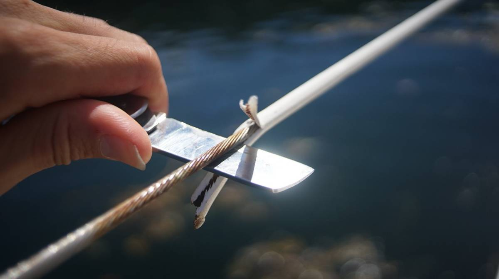
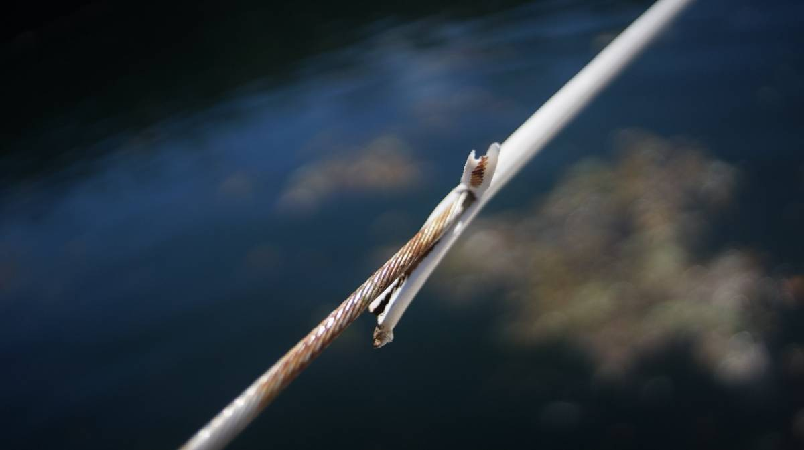

lifelines
2022.09.16
Cortes Island, BC, Canada.
One morning anchored in hathayim marine park, we were sitting on deck with our feet pressing up against the lifelines. We like to take our coffee up on deck when the weather's nice. With our eyes on the lifelines we said: "I wonder if the metal is all corroded under the plastic covering..."
On a sailboat, lifelines are important. They act as handholds when sailing, and in some instances it is the thing that can keep you from falling overboard. Other sailors had warned us that if water could get under the covering that it could corrode the metal. The lifeline coverings on Pino were old, cracked in a few places with some red staining the surface. We talked about removing it before, but never found the time. We figured that there would be some corrosion, given the age of the boat, and so on that morning we decided to strip the covering off to find out how bad it was.
We each grabbed a knife, and went to work. The plastic came off easy, and we saw the damage underneath. Some of the wires had cuts.
Stainless steel wire is made up of many more smaller wires, like ropes. If one is cut, the rest can still hold the line but the more cuts there are the weaker it becomes, and if the wire is under load then it can break. Our lifelines weren't as damaged as we thought, but we would not trust them to go offshore.
We removed all of the plastic covering, with plans to replace the lifelines sometime in 2023. Replacing the wire itself is not costly, but the hardware linking them to the stanchions and the swaging (how you connect the wire to the hardware that connects to the stanchions) are not cheap. We are considering using dyneema, but we are not yet sure.
More updates on this project soon...